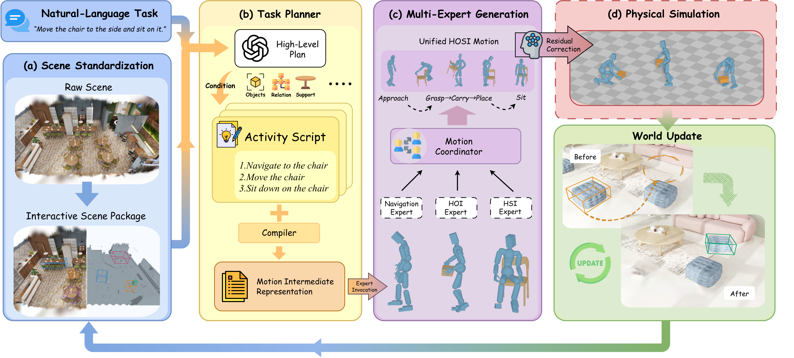
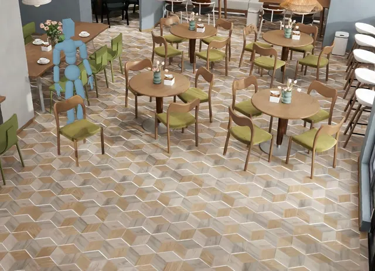
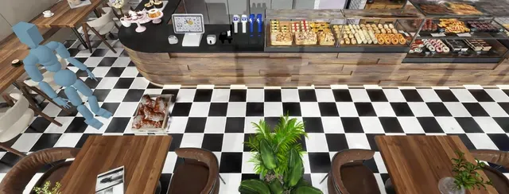
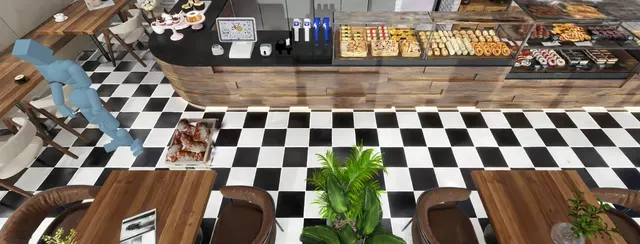
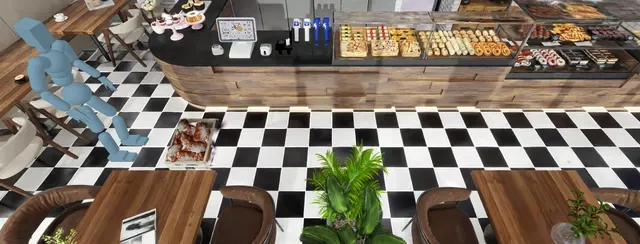
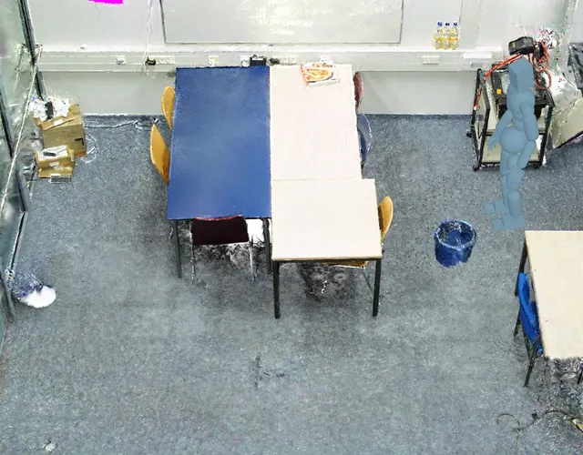
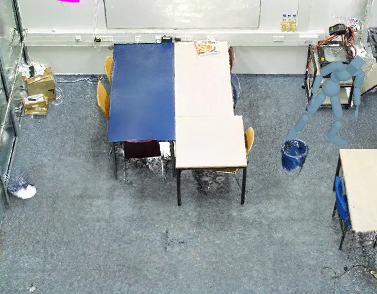
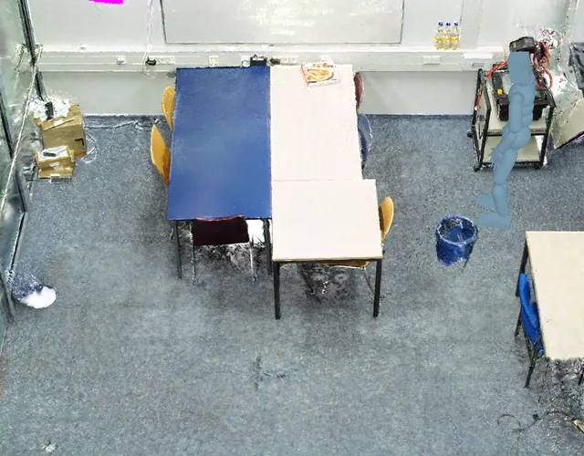

Abstract
Long-horizon human–object–scene interaction (HOSI) is central to embodied AI, animation, and game development. Existing human-object interaction (HOI) and human–scene interaction (HSI) models excel in their respective domains, but none alone covers tasks requiring multiple interaction skills. Training unified HOSI models is hindered by scarce and costly data.
We introduce World2HOSI, a multi-expert orchestration harness that generates continuous HOSI data from 3D Gaussian Splatting (3DGS) scenes and natural language instructions. Our key insight is that long-horizon HOSI hinges not on a stronger single model but on orchestration. Given a shared, structured scene state and an orchestration harness grounded in it, existing experts can jointly accomplish tasks beyond the reach of any of them alone. World2HOSI realizes this insight as a closed loop around a persistent scene state built from decoupled background and object assets. A harness plans action stages over this state, invokes experts via their native conditioning interfaces, and writes each action’s effects back, so that every invocation is grounded in the evolving world.
To reduce physical artifacts, bounded residual optimization and contact-driven physics simulation further ensure the physical plausibility of human motion and object manipulation, respectively, while preserving interaction intent. Experiments and a perceptual user study show that World2HOSI achieves the best task completion and interaction quality on the evaluated HOSI tasks, while generating more diverse data.
Pipeline

Interaction examples
Long-horizon tasks
Video could not load. Open video
Move the chair to the threshold, then walk over and take a sip of coffee. After finishing it, place the cup on the nearby table, and finally sit down in the chair.
Video could not load. Open video
Walk over and move the books to the table nearby, then walk over and adjust the stool, and finally sit down.
Object and scene interactions
Video could not load. Open video
Walk over to the chair, move it to the open area, and sit down.
Video could not load. Open video
Walk over to the box, pick it up, carry it along the counter, and put it down.
Video could not load. Open video
Walk around the tables, pick up the trash bin, and move it to the open area.
Physics-based refinement
Video could not load. Open video
Pick up the stack of books and carry it to the coffee table.
Video could not load. Open video
Pick up the bin, carry it to the open area, and put it down.
Comparison with baselines







